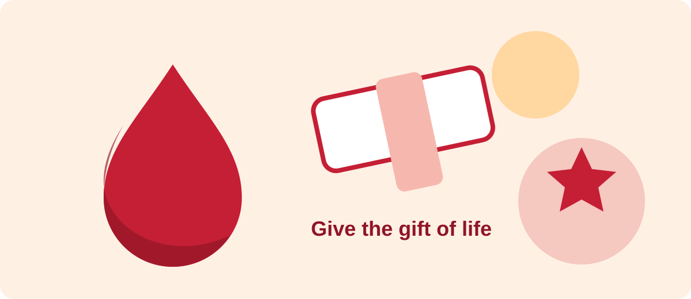

Donate Blood
Learn about donor eligibility, preparation and the steps involved in a safe blood donation.
Learn More
Learn about blood donation, blood products and how you can support the South African National Blood Service.
Learn About Donation Get InvolvedEvery donation supports patients who need blood during surgery, medical treatment, emergencies and childbirth. Choose the way that best suits your interests.
Learn about donor eligibility, preparation and the steps involved in a safe blood donation.
Learn MoreUse the contact page to review example donor-centre locations and plan where to get assistance.
View LocationsSupport the SANBS mission by enquiring about volunteering, sponsorship, partnerships or a community blood drive.
Make an Enquiry